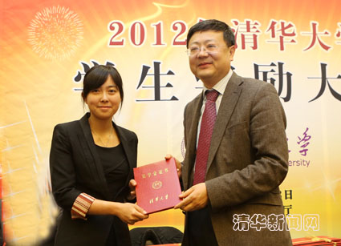
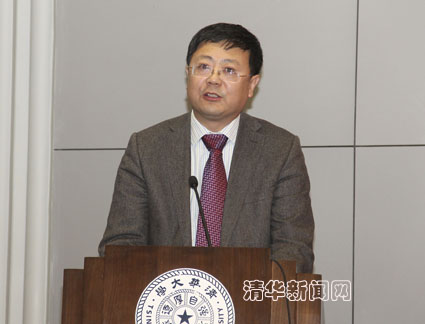
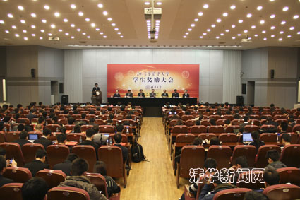

20名学子获得特等奖学金
2012年清华大学学生奖励大会举行
清华新闻网12月14日电 （记者 王冰冰） 12月13日下午，2012年清华大学学生奖励大会在主楼后厅隆重举行。校长陈吉宁，副校长、教务长袁驷，副校长姜胜耀出席大会并为获奖班级和同学颁奖。大会由校党委副书记史宗恺主持。

图为校长陈吉宁为特等奖学金获得者颁发获奖证书。记者 智斐 摄
大会在全体师生齐唱的《国歌》声中拉开序幕。
陈吉宁在会上讲话。他首先向获奖班级和同学表示祝贺，向指导教师表达感谢。陈吉宁指出，在大学生活中，获得荣誉和奖励是一件值得骄傲的事情。但是，我们不能把人才培养简化成看似客观、科学的数据或指标。学校表彰这些优秀同学，并不在于这些同学是什么样的大牛，或者他们取得了多么显赫的学分积、写了多少篇SCI论文、曾经获得过多少奖励，而更看重的是这些同学在成绩背后的故事，更看重这些光环下面的价值追求和做人做事的品格。

图为校长陈吉宁在大会上讲话。学生记者 李钧翔 摄
陈吉宁和同学们分享了两个小故事：一个是材料系直博生胡嘉冕同学的故事。他在美国宾州州立大学访问研究期间，在一个圣诞前夕的晚上结束工作后，自己又累又饿又冷地走在寂静的小镇街道上，突然间看到远处一家餐馆亮着的灯光，让他感受到了一种对人生、对事业、对情感的理解、启迪和顿惑，也正是这种经历让他懂得了坚持、韧性、勇气、独立性这些做人做事的重要品格。另一个是国防生班——精95班的故事。通过从大一起就组织全班集体自习和相互交流，班级整体学习成绩获得巨大进步，实现了他们“在最优秀的大学做最优秀的军人”的集体理想，同时在建设一个团结向上、奋发有为的集体的过程中，也懂得了宽容、合作、珍惜情感等学习之外的重要品格。
陈吉宁提到，我们要向今天获奖的优秀个人和集体学习，不是简单地学习他们的成长模式或者发展路径，而是要学习他们在成长过程中体现出来的崇尚科学的精神、超越自我的追求、探索未知的兴趣和团结互助的风气。
陈吉宁表示，清华是一所有理想的学校，每个清华学生都有着自己的梦想。学校会努力为每个同学提供多样的发展机会，创造最好的成长平台，同时也会让同学们经受各种历练和挑战，在获取知识的同时也得到知识之外的价值追求、素质提高和品格养成。他最后说，希望能有更多的机会听到同学们讲自己启迪人生的成长故事。

图为大会现场。学生记者 李钧翔 摄
2012年的学生奖励中，将特等奖学金的奖励名额扩展为本科生和研究生各十名，并首次将本科生和研究生先进班集体纳入大会表彰。2012年，共有20个本科生班级和15个研究生班级获得“先进班集体”称号，本科生和研究生各10名同学获得“特等奖学金”，19名同学获得“蒋南翔奖学金”，42名同学获得“一二·九奖学金”，65名同学获得“好读书奖学金”，389名同学获得“新生奖学金”。
袁驷宣读了2012年“特等奖学金”、“蒋南翔奖学金”、“一二·九奖学金”和“好读书奖学金”获奖名单，姜胜耀宣读了本科生和研究生先进班集体名单。
会上，史宗恺介绍了各个奖项的设立背景。他简要生动地介绍了每位获得特等奖学金的同学的学术特长。他同时深情讲述指导教师的辛勤培育，希望获奖同学倍加铭谢师恩、努力奋进回报。
化工系化92班易横代表先进班集体发言，他讲述了自己所在班级通过各项活动的开展，使每位同学获得良好的个性发展、找到人生梦想方向的故事，表达对班集体的由衷热爱。
美术学院本科生姚璐、材料系博士研究生胡嘉冕分别代表特等奖学金获奖学生发言，通过回顾自己的科研经历和心路历程，表达对老师辛勤培育的感谢和在未来奋发进取的决心。
教务处、校友总会、学生部、研究生部等相关单位的负责人以及各院系领导参加了大会。
编辑：襄桦
附：2012年本科生特等奖学金获奖名单
院系 | 姓名 |
建筑学院 | 唐海达 |
水利系 | 江汉臣 |
电机系 | 杨知方 |
电子系 | 屠环宇 |
计算机系 | 方展鹏 |
交叉信息院 | 贾志豪 |
经管学院 | 冀东星 |
新闻学院 | 胡泽 |
美术学院 | 姚璐 |
医学院 | 史欣未 |